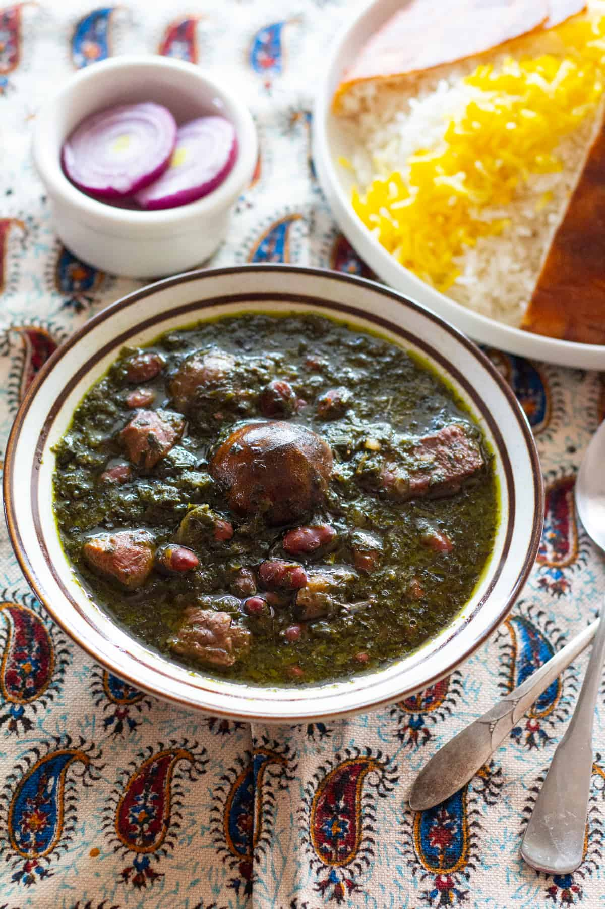

Ghormeh Sabzi

Description
Known to some as "Iran's national dish", ghormeh sabzi is a stew made of several types of herbs, red kidney beans, Persian dried limes and lamb. The base of this amazing dish is herbs sauteed in oil and mixed with lamb and beans, cooked over medium heat to perfection, then served with Persian rice and tahdig or kateh.
Ingredients
- Herbs: Parsley, Fenugreek, Cilantro, Chives
- Beef Stew Meat
- Kidney Beans
- Persian dried limes
Steps
- If using dried kidney beans, soak them in water for 3 to 8 hours.
- Wash the herbs and dry them thoroughly. Chop them finely and set aside.
- Heat vegetable oil in a large pan and once it's hot, saute herbs for about 15 minutes, until they are a bit dark in color and aromatic. Turn the heat off and set the herbs aside.
- Heat vegetable oil in a large pot and saute onion until golden brown. Add in the lamb and the turmeric. Cook for about 5-7 minutes, stirring occasionally until the lamb is seared on all sides.
- Add in water, and bring it to simmer. Rinse the soaked beans and add them to the lamb (check our information below on using canned beans). Cover and cook for 30 minutes.
- Add in sauteed herbs to the stew. Cover and cook for another 1 to 1 ½ hours, until the lamb and beans are fully cooked.
- Pierce the dried limes using a fork and add them to the stew. Season with salt and pepper. Cover and cook for another 15 minutes.
- Serve with warm rice